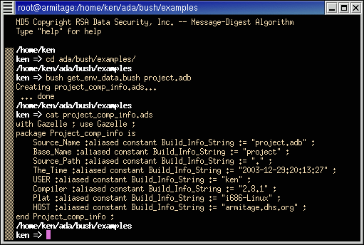

Create an Ada package describing the software build environment.

#! /usr/local/bin/spar -gd
-- TITLE : Generate Build Environ File (ADS)
-- LANGUAGE : AdaScript
-- MODULE : gen_env_data
-- COMPONENT OF : BuZco Software (Gazelle)
-- PARENT ORGANIZATION : BuzCo Systems
-- LATEST AUTHOR : Buz Cory
-- $RCSfile: gen_env_data,v $
-- $Revision: 0.0 $
-- $Date: 2003/12/22 12:34:52 $
-- --------------------------------------------------------------------
-- EXTERNAL MODULES USED
-- --------------------------------------------------------------------
-- PURPOSE :
-- --------------------------------------------------------------------
-- OVERVIEW:
-- --------------------------------------------------------------------
-- NOTICES, LICENSE follow; NOTES, HISTORY at end
-- ----------------------------------------
-- This software is part of the Gazelle suite of useful,
-- lightweight, fast tools, developed and distributed by BuzCo
-- Systems.
--
-- UNREGISTERED COPIES OF GAZELLE SOFTWARE COME WITH NO WARRANTY,
-- EXPRESSED OR IMPLIED, AND EXPRESSLY WITHOUT THE IMPLIED
-- WARRANTIES OF MERCHANTABILITY OR FITNESS FOR ANY PARTICULAR
-- PURPOSE.
--
-- Registered users may have additional rights, depending on the
-- terms under which they choose to register. See the file
-- GAZELLE.REGISTER in the root directory of the distribution.
--
-- IF THE COUNTRY, STATE, OR PROVINCE IN WHICH YOU ARE USING THIS
-- GAZELLE SOFTWARE DOES NOT ALLOW SUCH LIMITATIONS, YOU HAVE NO
-- LEGAL RIGHT TO USE AN UNREGISTERED COPY.
--
-- GAZELLE software is distributed under the GNU General Public
-- License. It may be freely copied, modified, redistributed
-- under the terms of that license.
--
-- You should have gotten a copy of that license in the file
-- COPYING. If not, a copy may be obtained by sending E-mail to
-- BuzCo Systems or by writing:
-- The Free Software Foundation
-- 59 Temple Place - Suite 330
-- Boston, MA 02111-1307, USA.
-- ====================================================================
procedure
gen_env_data
is
pragma ada_95 ;
New_Line : constant character := ASCII.LF ;
body_RCSid : constant string :=
"$Id: gen_env_data,v 0.0 2003/12/22 12:34:52 buzCo_as_toolmakr Exp $"
;
pragma assumption( used, body_RCSid );
body_Copyright : constant string
:= "Gazelle .gen_env_data " & New_Line
& "body Copyright © 2003, BuzCo Systems" & New_Line
& "Licensed under the GNU General Progam License (GPL)." & New_Line
;
pragma assumption( used, body_Copyright );
-- pragma Unreferenced( body_RCSid, body_Copyright ) ;
-- ================================================================
Me : constant string
:= command_line.command_name ;
-- Time Stuff
Now : constant calendar.time
:= calendar.clock ;
YR : calendar.year_number ;
MO : calendar.month_number ;
DY : calendar.day_number ;
SECS : calendar.day_duration ;
Hour : integer ;
Min : integer ;
Sec : integer ;
The_Time : string ;
procedure
fix_time
is
Mins_Hr : constant integer := 60 ;
Secs_Min : constant integer := 60 ;
Secs_Hr : constant integer := Mins_Hr * Secs_Min ;
begin
calendar.split( Now, YR, MO, DY, SECS ) ;
Sec := integer( SECS ) ;
The_Time := strings.trim( strings.image( YR ), trim_end.both ) ;
The_Time := The_Time & '-' & strings.trim( strings.image( MO ), trim_end.both ) ;
The_Time := The_Time & '-' & strings.trim( strings.image( DY ), trim_end.both ) ;
Hour := numerics.floor( Sec / Secs_Hr ) ;
if Hour < 10 then
The_Time := The_Time & ":0" ;
else
The_Time := The_Time & ':' ;
end if ;
The_Time := The_Time & strings.trim( strings.image( Hour ), trim_end.both ) ;
Sec := Sec mod Secs_Hr ;
Min := numerics.floor( Sec / Secs_Min ) ;
if Min < 10 then
The_Time := The_Time & ":0" ;
else
The_Time := The_Time & ':' ;
end if ;
The_Time := The_Time & strings.trim( strings.image( Min ), trim_end.both ) ;
Sec := numerics.floor( Sec mod Secs_Min ) ;
if Sec < 10 then
The_Time := The_Time & ":0" ;
else
The_Time := The_Time & ':' ;
end if ;
The_Time := The_Time & strings.trim( strings.image( Sec ), trim_end.both ) ;
end fix_time ;
Pkg_Name : string ;
Pkg_File_Name : string ;
Pkg_File : file_type ;
LOGNAME : constant string := "unknown";
pragma unchecked_import( shell, LOGNAME );
USER : string := "unknown";
pragma unchecked_import( shell, USER ) ;
Compiler : constant string
:= `gcc( "--version" ) ;` ;
Plat : constant string
:= `uname( "-m" ) ;` & '-' & `uname( "-s" ) ;` ;
HOST : constant string
:= `uname( "-n" ) ;` ;
Sep : character ;
Idx : natural ;
Indnt : constant string := " " ;
cstr : constant string
:= " :aliased constant Build_Info_String := " & '"' ;
EOL : constant string := '"' & " ;" ;
-- ================================================================
begin
if strings.length( LOGNAME ) > 0 then
USER := LOGNAME;
end if;
if command_line.argument_count /= 1 then
put_line( current_error, Me & ": Wrong Arg Count" ) ;
command_line.set_exit_status( 1 ) ;
return ;
end if;
if strings.length( command_line.argument( 1 ) ) < 5 then
put_line( current_error, Me & ": Expected *.ad? filename" ) ;
command_line.set_exit_status( 1 ) ;
return ;
end if;
declare
Source_Name : constant string
:= command_line.argument( 1 ) ;
-- expected to be *.ad?
Base_Name : constant string
:= files.basename( strings.head
( Source_Name
, strings.length( Source_Name ) - 4
)
) ;
Source_Path : constant string
:= files.dirname( Source_Name ) ;
begin
if not strings.glob( "*.ad?", Source_Name ) then
put_line( Me & ": Not a valid GNAT file name" ) ;
command_line.set_exit_status( 1 ) ;
return ;
end if ;
fix_time ;
if strings.glob( "*-*", Base_Name ) then
-- This is a child package.
Sep := '-' ;
else
Sep := '_' ;
end if ;
Pkg_File_Name := Base_Name & Sep & "comp_info" ;
Pkg_Name := strings.to_proper( Pkg_File_Name ) ;
Pkg_File_Name := Pkg_File_Name & ".ads" ;
for i in 1 .. strings.count( Pkg_Name, "-" ) loop
Idx := strings.index( Pkg_Name, "-" ) ;
Pkg_Name := strings.replace_slice
( Pkg_Name
, positive( Idx )
, Idx
, "."
) ;
end loop ;
create( Pkg_File, out_file, Pkg_File_Name ) ;
put_line( "Creating " & Pkg_File_Name & "..." ) ;
set_output( Pkg_File ) ;
put_line( "with Gazelle ; use Gazelle ;" ) ;
put_line( "package " & Pkg_Name & " is" ) ;
put_line( Indnt & "Source_Name" & cstr & Source_Name & EOL ) ;
put_line( Indnt & "Base_Name" & cstr & Base_Name & EOL ) ;
put_line( Indnt & "Source_Path" & cstr & Source_Path & EOL ) ;
put_line( Indnt & "The_Time" & cstr & The_Time & EOL ) ;
put_line( Indnt & "USER" & cstr & USER & EOL ) ;
put( Indnt & "Compiler" & cstr ) ;
put( strings.field( Compiler, 1, ASCII.LF ) ) ;
put_line( EOL ) ;
put_line( Indnt & "Plat" & cstr & Plat & EOL ) ;
put_line( Indnt & "HOST" & cstr & HOST & EOL ) ;
put_line( "end " & Pkg_Name & " ;" ) ;
set_output( standard_output ) ;
close( Pkg_File ) ;
put_line( " ... done" ) ;
end;
end gen_env_data ;
-- ====================================================================
-- NOTES, HISTORY follow:
-- ----------------------------------------
-- NOTE: The coding and comment style were chosen to provide nice
-- indent folding until the ViM syntax folding works well.
-- ================================================================
-- Changelog
-- -------------------------------------------------------------------
-- $Log: gen_env_data,v $
-- Revision 0.0 2003/12/22 12:34:52 buzCo_as_toolmakr
-- First Cut
--
-- vim: sw=4 tw=72 fdm=indent ft=ada